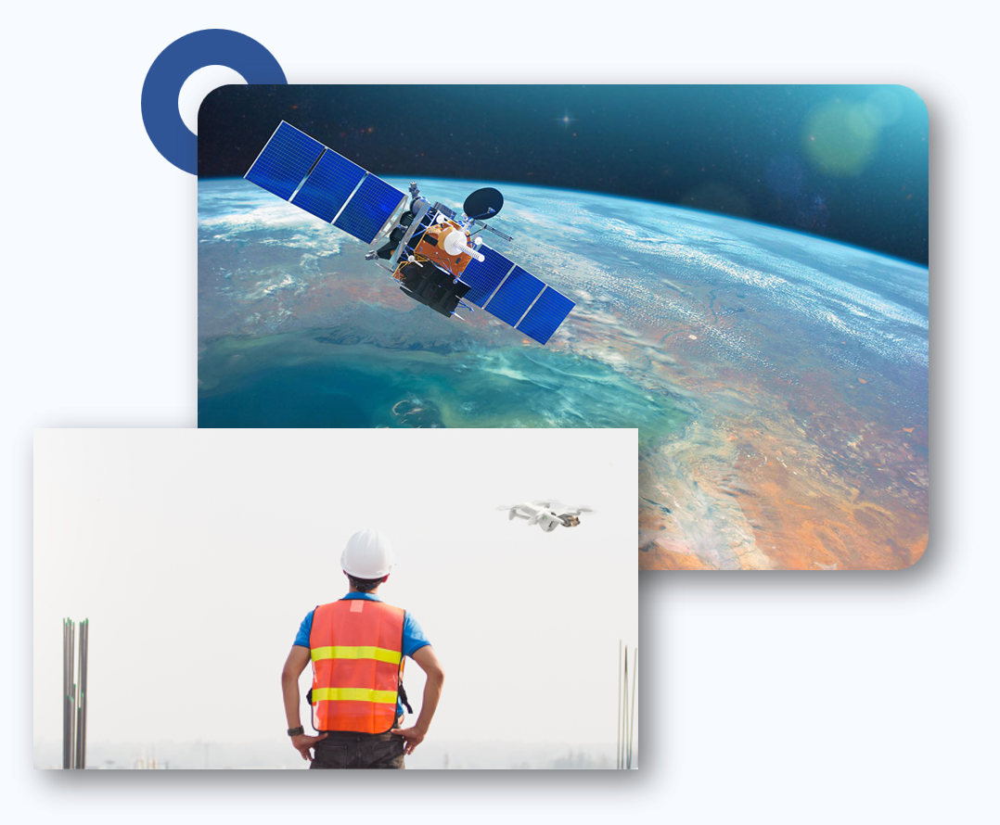
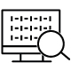
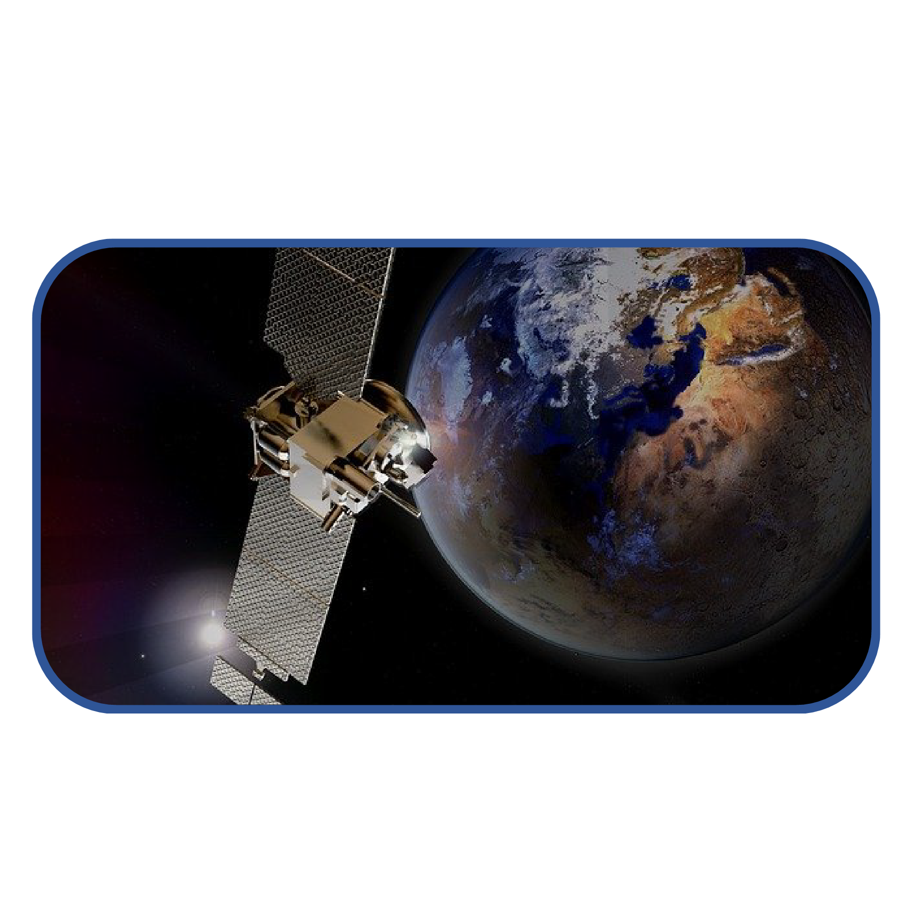
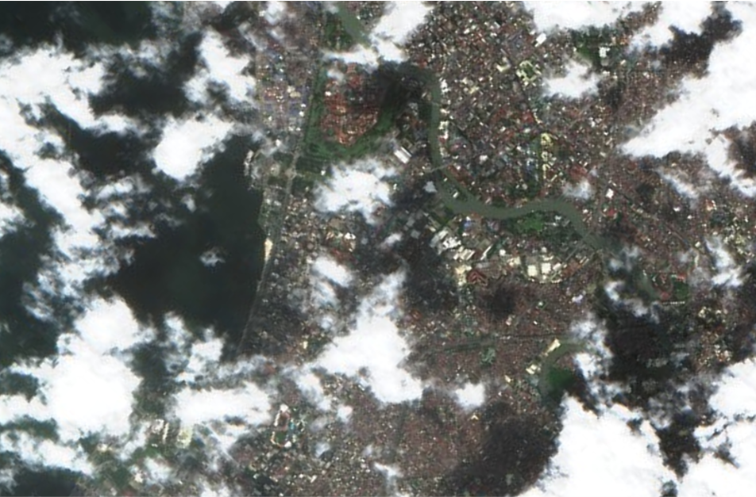
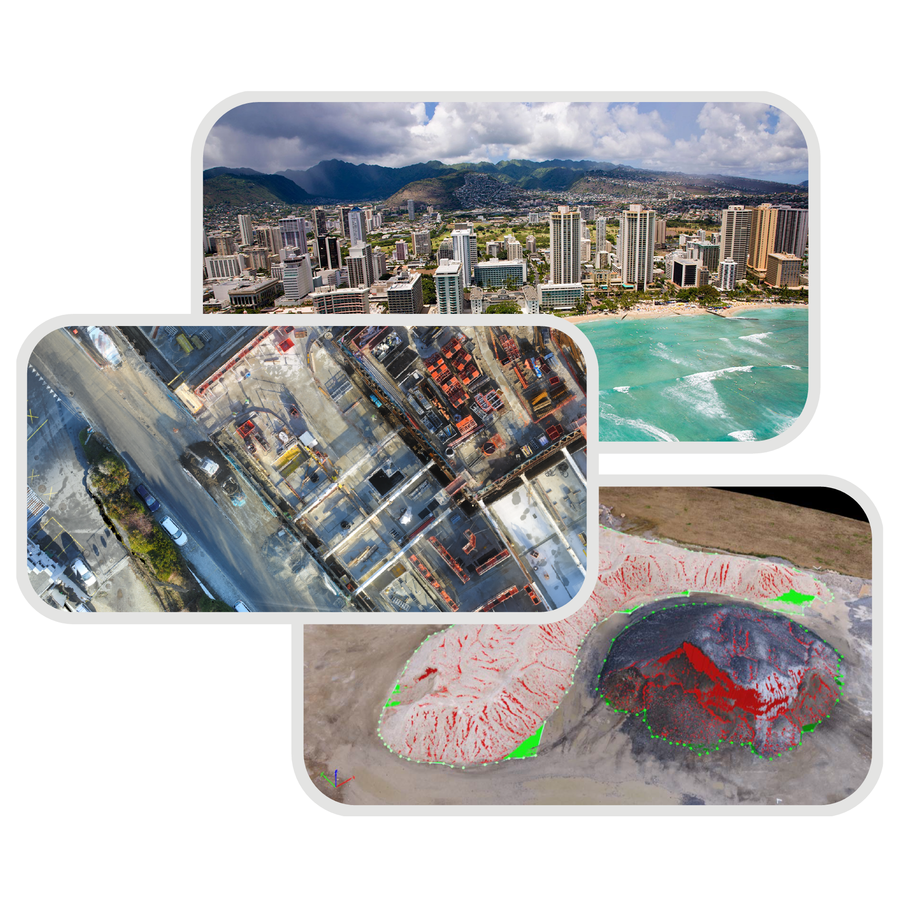

En geocartos facilitamos la extracción de datos geoespaciales mediante el uso de percepción remota como tecnología de vanguardia para recolectar, procesar e interpretar información que ocurren en la superficie terrestre, sin establecer contacto físico con éstos.

En Geocartos® ofrecemos amplia experiencia en obtención y análisis de información mediante UAV e imágenes de satélite de alta resolución. Para la obtención ágil de información con un proceso 100% digital

Diferentes sensores permiten visualizar información que a nuestros ojos seria imposible
Las imágenes de satélite ofrecen una clara evidencia visual y nuevas perspectivas
Gracias a la naturaleza de la imagen, permite obtener datos y analizarlos de una manera eficiente
Lla obtención de información mediante imágenes ha tenido un crecimiento expoencial, al grado de ser Bid Data
Proporcionamos soluciones mediante el acceso a constelación satelitales tanto públicas como privadas, adaptamos el proyecto para ofrecer la mejor solución y así hacer la mejor toma de decisiones de una manera precisa y dinámica.

Supervisa los avances con alta resolución de imagen
This card has supporting text below as a natural lead-in to additional content.
This card has supporting text below as a natural lead-in to additional content.
Supervisa los avances con alta resolución de imagen
This card has supporting text below as a natural lead-in to additional content.
This card has supporting text below as a natural lead-in to additional content.
Geocartos® somos pioneros en el manejo de tecnologia de imagenes de radar
24/7 Monitoreo sin importar el clima
Acceso a imágenes precisas de alta resolución
Plazo de recurrencia orbital constante

Las imágenes modernas se capturan desde una amplia gama de altitudes que van desde el nivel del suelo a más de 22.000 millas sobre la Tierra. Proporcionamos soluciones mediante constelaciones satelitales con acceso público y privado, así como con monitoreo diario, imágenes de alta resolución, entre otras novedades tecnológicas.
This card has supporting text below as a natural lead-in to additional content.
This card has supporting text below as a natural lead-in to additional content.
This card has supporting text below as a natural lead-in to additional content.
This card has supporting text below as a natural lead-in to additional content.
This card has supporting text below as a natural lead-in to additional content.
This card has supporting text below as a natural lead-in to additional content.
Pioneros en la implementación de tecnología drones para dar respuesta a diferentes problemáticas, contamos con equipo UAV´s de última generación para el monitoreo y acceso a zonas complejas.
Integramos tus proyectos a una era digital y geoespacial.
Monitorea cambios sobre el terreno o avances de proyectos a través del tiempo, para la mejor toma de decisión.
Ahorra tiempo en obtención de información mediante el procesamiento y análisis de datos geoespaciales.
Agiliza la adquisición de datos geoespaciales, especialmente en zonas remotas o de difícil acceso.

Uso de tecnologías través de captura de datos geoespaciales y sistemas de información geográfica, brindamos respuestas en proyectos de topografía, cartografía, catastro e incluso minería a cielo abierto, esto para la toma de decisiones en el ordenamiento territorial.